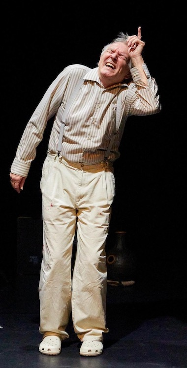
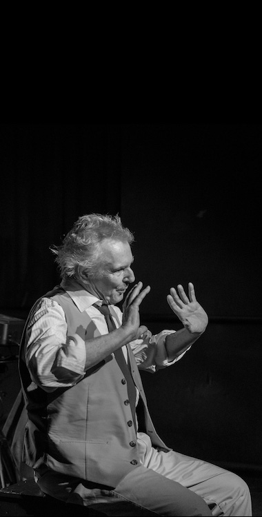
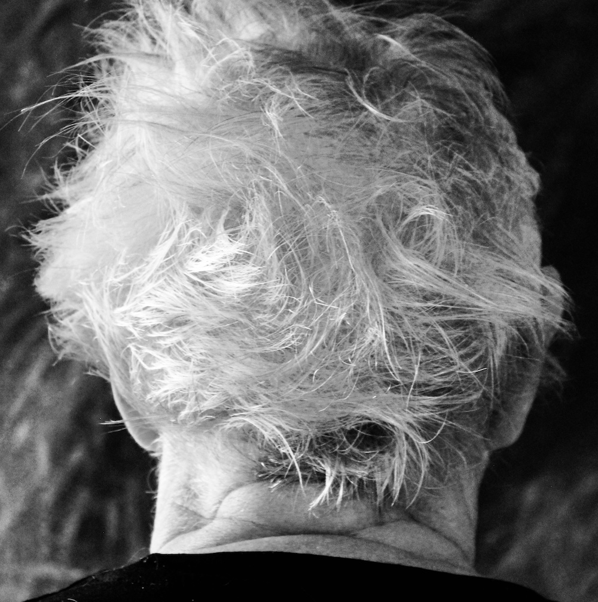

Seit 1979 auf der Bühne
Werner
Werner
Bodinek
Freischaffender Theatermacher — Schauspiel, Musik, Produktion und Regie.

Als Nächstes
Wann Sie ihn sehen können
Aus den Produktionen
Bilder von der Bühne


